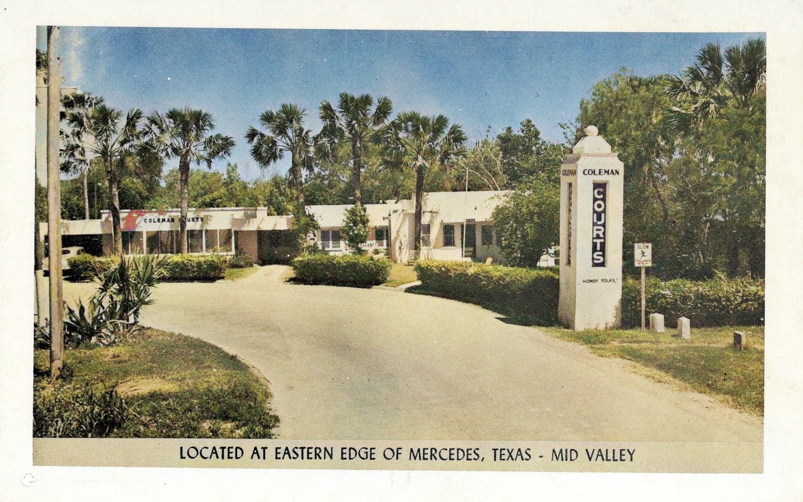
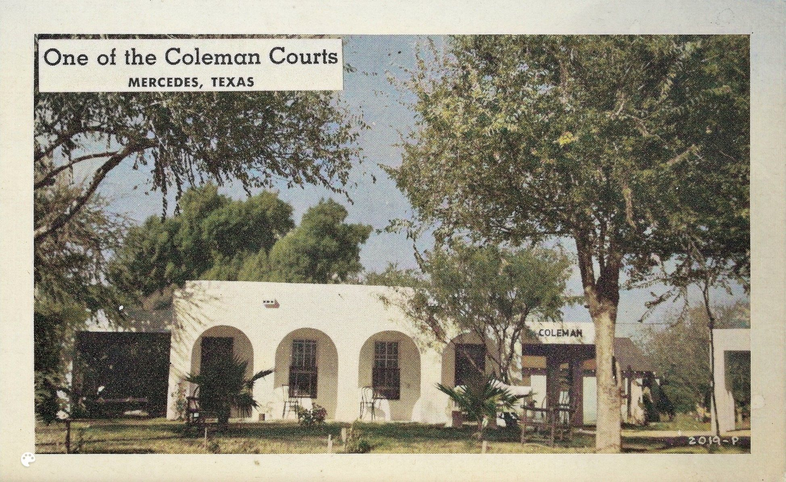
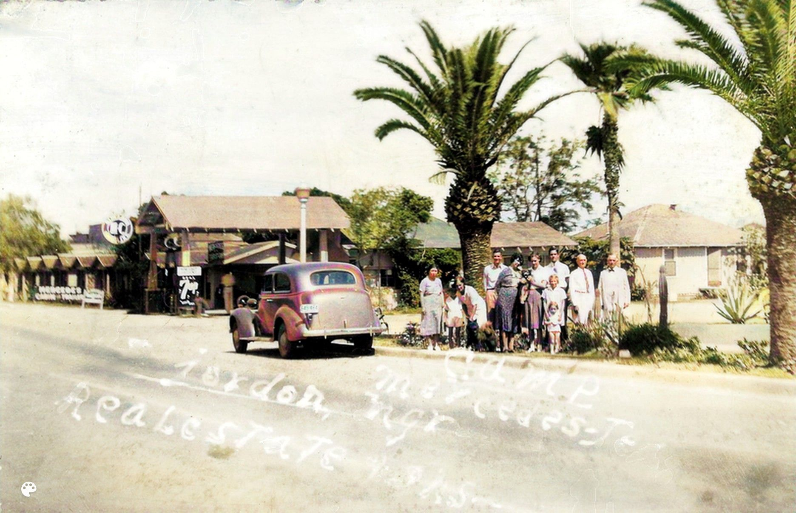
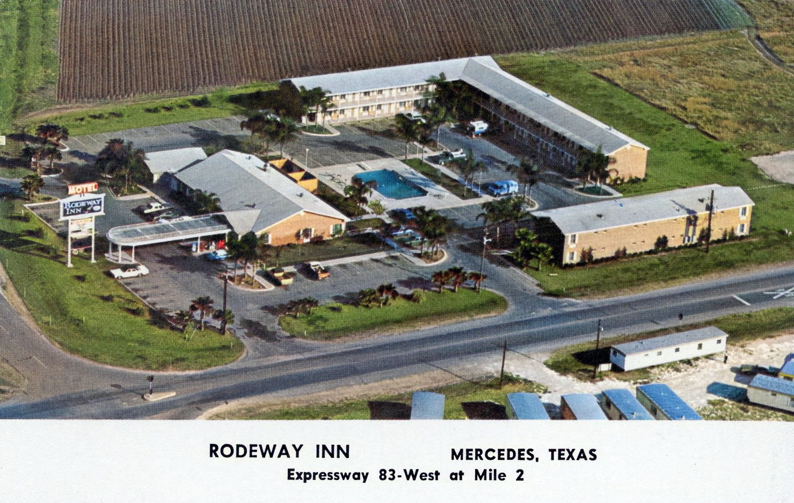

Home
Q004
Coleman Courts Motel at Entry to Queen City Area of Mercedes 1940
For many years, the Coleman Courts Motel stood at the entrance to the Queen City subdivision of Mercedes. The motel was quite attractive, with lush landscaping and Spanish Colonial exteriors. Each unit had its own carport and kitchenette.
The advertising copy on back of card says: 'The Coleman Courts. A Semi-Tropical Garden, Beautifully Landscaped. Housekeeping Apartments, more than just a place to Live. Located Mid Valley, just a 15 minute drive to Romantic Old Mexico; one hour to the Gulf and Padre Island. Phone LO 5-1399. Mercedes, Texas. Charles and Mary Jane Coleman. Managing Owners'.
View Enlarged View Library
View Enlarged View Library
{kind=link}
Q003
Coleman Courts Motel In Mercedes Had Shuffleboard and Gardens 1940
Here is an early postcard of the Coleman Courts located in the Queen City area of Mercedes. The advertising copy on back of card says: Howdy Folks. We are staying at one of the coziest courts and right here in the middle of the Valley. It is more than just a place live. The homey atmosphere, semi-tropical gardens, shuffleboard courts , everything. Come on down and enjoy it with us.
The motel has been closed for over a decade now in 2023. If one looks closely through the overgrowth at 114 -116 E. Liberty Street, some remnants of the motel can still be seen.
View Enlarged View Library
View Enlarged View Library
{kind=link}

View Enlarged View Library
U009
Motel Camp Mercedes on Old 83 1938
Motel camps such as this became popular as more people could afford automobiles and vacation travel. Motels allowed travelers to park their cards by their rooms, a feature not available in hotels. It is not clear where in Mercedes this motel was located, probably on old Highway 83.
The sender of the card was apparently also the owner of the camp. He wrote on the postcard: 'John F Jordan Camp Mercedes 8-5-38. Dear friends, sending you a photo of part of our Camp. Sorry you can't come down. here. Some places you can live so much cheaper here. Can you come soon. I am planning on a trip to Mo-Ill- and Ind this fall. So write me a long letter please. How is our church now. hope you will come down soon. with best wishes. I am your friend, Jordon'
View Enlarged View Library
View Enlarged View Library
{kind=link}
Q006
First National Chain Motel Opens in Cornfields of Mercedes 1973
This postcard depicts the Rodeway Inn, which opened in 1972 with much fanfare. For over ten years, a group of Mercedes investors known as the Mid Valley Community Hotel Organizers had been trying to persuade a national motel chain to build a motel in Mercedes. They believed that a national chain motel would provide greater economic benefits, even though there were already several local motels. [60] Their efforts were successful when the new hotel opened in 1972. Although it is no longer the showplace of its glory days, the motel is still open in 2023.
The advertising copy on back of card says: 'Restaurant. Coffee Shop . Private Club. Pool. 24 hour switchboard . Direct local dialing. Free color T.V. Ample parking space . Pets allowed . 9 miles from Mexico . Photo by Frank B. Whaley'
View Enlarged View Library
View Enlarged View Library
{kind=link}
Home